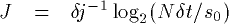
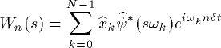

The first thing to consider is the shape of the wavelet. For decomposing the NINO3 SST data, we chose the Morlet wavelet because:
For the Morlet wavelet transform, where the mother wavelet is:

Our next choice is a set of scaling parameters s,
such that we adequately sample all the frequencies present in our
time series. We first choose the smallest resolvable scale,
s0, as some multiple of our time resolution, dt.
For the NINO3 SST data, we have seasonal data, thus dt = 0.25 years.
The smallest wavelet we could possibly resolve is 2dt, thus
we choose s0 = 2dt = 0.5 years.
The larger scales (longer periods) are chosen as power-of-two multiples
of this smallest scale,
(3.1a) . . . . . . . . . .
(3.1b) . . . . . . . . . . 
The largest scale chosen should be less than 1/2 the length of the entire time series. The choice of scales for the NINO3 SST data is shown on the right-hand axis of Figure 3. In theory, if these scales are chosen wisely, then one can construct an orthogonal complete basis set. In reality, one usually over-samples the scales so as to provide information on freqencies in between the orthogonal scales. Thus, in Figure 3, the scales have been over-sampled by choosing 10 sub-scales within each scale.
(3.2) . . . . . . . . . . 
To use this formula, the FT of the wavelet function should be known analytically. In addition, the wavelets must be normalized as:
(3.4) . . . . . . . . . .

Unlike the convolution, the FFT method allows the computation of all n points simultaneously, and can be efficiently coded using any standard FFT package.
The steps to compute the wavelet transform for a time series are thus:
One problem with performing the wavelet transform in Fourier space is that this assumes the time series is periodic. The result is that signals in the wavelet transform at one end of the time series will get wrapped around to the other end. This effect is more pronouced at larger scales as the influence of each wavelet extends further in time. One way to avoid this is to pad one end of the time series with zeroes. A clever method is to pad with enough zeroes to make the length of the time series equal to a power of two, and thereby speed up the FFT as well.